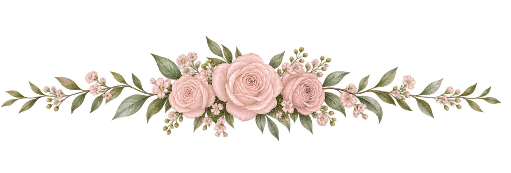

Noah & Bethany · 11.28.2026
Share your photos
You were there for the moments we missed. Scan to add your photos and videos from today to our shared album.
nbperrodin.com/photos
Point your camera at the code · tap the link · tap Open the shared album, then the + to add yours.
Thank you for celebrating with us.